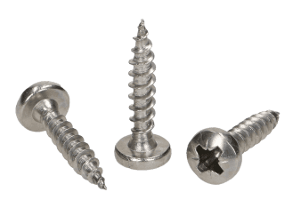

DIN 7996 Шуруп по дереву с полукруглой головкой
Стандарт
DIN 7996
Цена от
5,29 ₽
Размерный ряд
— редкая, с крупным шагом, специально адаптированная для древесины. Обеспечивает:
Саморезы и шурупы » DIN 7996 Шурупы (саморезы) по дереву с полукруглой головкой, крестообразный шлиц Ph, Pz
Варианты и размеры (15)
| Наименование | Размер | Длина, мм | Материал | Покрытие | Цена |
|---|---|---|---|---|---|
| DIN 7996 Шуруп по дереву с полукруглой головкой L=100мм | 100 | 10,30 ₽ | |||
| DIN 7996 Шуруп по дереву с полукруглой головкой L=120мм | 120 | 11,60 ₽ | |||
| DIN 7996 Шуруп по дереву с полукруглой головкой L=12мм | 12 | 4,50 ₽ | |||
| DIN 7996 Шуруп по дереву с полукруглой головкой L=16мм | 16 | 4,80 ₽ | |||
| DIN 7996 Шуруп по дереву с полукруглой головкой L=20мм | 20 | 5,00 ₽ | |||
| DIN 7996 Шуруп по дереву с полукруглой головкой L=25мм | 25 | 5,40 ₽ | |||
| DIN 7996 Шуруп по дереву с полукруглой головкой L=30мм | 30 | 5,70 ₽ | |||
| DIN 7996 Шуруп по дереву с полукруглой головкой L=35мм | 35 | 6,00 ₽ | |||
| DIN 7996 Шуруп по дереву с полукруглой головкой L=40мм | 40 | 6,30 ₽ | |||
| DIN 7996 Шуруп по дереву с полукруглой головкой L=45мм | 45 | 6,70 ₽ | |||
| DIN 7996 Шуруп по дереву с полукруглой головкой L=50мм | 50 | 7,00 ₽ | |||
| DIN 7996 Шуруп по дереву с полукруглой головкой L=60мм | 60 | 7,70 ₽ | |||
| DIN 7996 Шуруп по дереву с полукруглой головкой L=70мм | 70 | 8,30 ₽ | |||
| DIN 7996 Шуруп по дереву с полукруглой головкой L=80мм | 80 | 9,00 ₽ | |||
| DIN 7996 Шуруп по дереву с полукруглой головкой L=90мм | 90 | 9,70 ₽ |